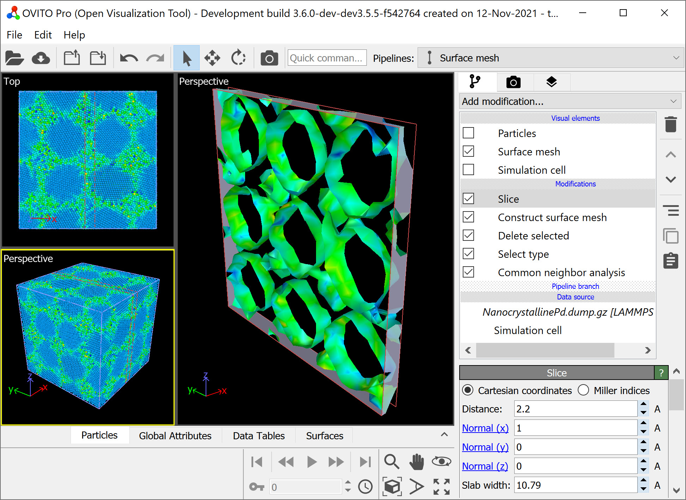

Multi-viewport layouts
{kind=link}
OVITO lets you change the standard 2-by-2 layout of the interactive viewport windows to tailor the arrangement and number of viewports to your specific needs. Furthermore, it’s possible to import multiple simulation datasets into the scene or use branched data pipelines to visualize different datasets or analysis results side by side or in different viewports.
The layout of the viewport windows consists of nested boxes, each split either horizontally or vertically. A layout box can be subdivided one or more times, and each sub-cell can either contain a nested layout box or an actual viewport window. The cells are separated by divider lines, which you can move with the mouse to adjust the relative size of the viewport windows in the layout:
{kind=link}
Note that the multi-viewport layout is only visible if none of the viewport windows is currently maximized, which is indicated by the state of the maximize button in the viewport toolbar. If necessary, press the maximize button a second time to return to the full layout view.
Right-click on any of the blue divider lines to open the context menu depicted in the following screenshot, which provides functions for introducing further subdivisions, removing entire layout cells, or resetting the relative size of the cells. Additionally, you can left-click on a window’s caption text to open the viewport menu. Here you have access to further layout manipulation functions, e.g. for splitting a viewport window into two halves:
Right-click on a divider line
Left-click on a viewport caption
Any changes you make to the viewport layout can be undone if needed using the function as usual.
Controlling what is shown in the viewports
By default, all viewports in the layout depict the same three-dimensional scene, just from different camera angles. If you add multiple datasets or pipelines to the scene, they will be visible in every viewport. However, using the function found in the viewport menu (see right screenshot above), you can turn the visibility of individual pipelines on or off on a per-viewport basis. This gives you the possibility to display different objects or models in different viewport windows of the layout.
Read the introduction on pipeline cloning to learn how to duplicate an existing pipeline in OVITO and change the visualization style or input dataset for the cloned pipeline.
Rendering images or movies of a viewport layout pro
In the render settings panel of OVITO Pro you can turn on the option Render all viewports to include all panels of the current layout in the rendered output image or movie:
{kind=link}
Additionally, switch on the option Preview visible region to display guides in all interactive viewport windows indicating the visible portions that will be part of the final output layout.
Tip
If you want to permanently replace the standard 2-by-2 viewport layout of OVITO with your own layout, you can do it via this customization mechanism.